本章介绍了神经网络的主要构件，并解释了当今三种主要的神经网络体系结构。而且解释了在训练任何人工智能模型之前数据准备的重要性，最后解释了解决一个回归数据问题的过程。本章结束时，你将牢固掌握不同网络体系结构及其不同应用的学习过程。
简介
在前一章中，解释了为什么深度学习现在变得如此流行，PyTorch被介绍为开发深度学习解决方案的最流行的库之一。虽然解释了使用PyTorch构建神经网络的主要语法，但在本章中，我们将进一步探讨神经网络的概念。
虽然神经网络理论是在几十年前发展起来的，但是由于这个概念是从感知器的概念发展而来的，所以最近已经创建了不同的架构来解决不同的数据问题。这在一定程度上是由于现实生活中的数据问题中存在不同的数据格式，如文本、音频和图像。
本章的目的是深入探讨神经网络的主题及其主要优点和缺点，以便您可以了解何时以及如何使用它们。然后，我们将解释最流行的神经网络架构的构建模块:人工神经网络 ( ANNs )，卷积神经网络 ( CNNs )，以及递归神经网络 ( RNNs )。
接下来，将通过解决现实生活中的回归问题来解释建立有效模型的过程。这包括准备要提供给神经网络的数据(也称为数据预处理)，定义要使用的神经网络体系结构，以及评估模型的性能，目的是确定如何对其进行改进以获得最佳解决方案。
上述过程将使用本章将讨论的神经网络体系结构之一来完成，同时考虑到每个数据问题的解决方案应使用对所讨论的数据类型表现最佳的体系结构来执行。其他架构将在后续章节中使用，以解决更复杂的数据问题，包括使用图像和文本序列作为输入数据。
注意
本章中出现的所有代码都可以在:https://packt.live/34MBauE找到。
神经网络简介
神经网络从训练数据中学习，而不是被编程为通过遵循一组规则来解决特定任务。该学习过程可以遵循以下方法之一:
- 监督学习:这是最简单的学习形式，因为它由一个带标签的数据集组成，其中神经网络找到解释特征和目标之间关系的模式。学习过程中的迭代旨在最小化预测值和实际值之间的差异。一个例子是根据叶子的属性对植物进行分类。
- 无监督学习:与前面的方法相反，无监督学习包括用未标记的数据(意味着没有目标值)训练一个模型。这样做的目的是为了更好地理解输入数据。一般来说，网络获取输入数据，对其进行编码，然后从编码版本中重建内容，理想情况下保留相关信息。例如，给定一个段落，神经网络可以映射单词，然后建议哪些单词对该段落最重要或最具描述性。这些可以用作标签。
- Reinforcement learning: This methodology consists of learning from the input data, with the main objective of maximizing a reward function in the long run. This is achieved by learning from the data as it comes in, rather than it being trained over static data (as in supervised learning). Hence, decisions are not made based on the immediate reward, but on the accumulation of it in the entire learning process. An example of this is a model that allocates resources to different tasks, with the objective of minimizing bottlenecks that slow down general performance.
从我们在这里提到的学习方法中，最常用的是监督学习，这是将在后续部分中主要使用的方法。这意味着本章中的所有练习、活动和示例都将使用带标签的数据集作为输入数据。
什么是神经网络？
正如我们前面所讨论的，神经网络是一种机器学习算法，它以人脑的解剖结构为模型，使用数学方程从训练数据的观察中学习模式。
然而，要真正理解神经网络通常遵循的训练过程背后的逻辑，理解感知机的概念是很重要的。
感知器是由Frank Rosenblatt在20世纪50年代开发的，它是一种人工神经元，接受几个输入并产生一个二进制输出，类似于人脑中的神经元。然后，这成为后续感知器(神经元)的输入。感知器是神经网络的基本组成部分(就像神经元是人脑的组成部分一样):

图2.1:感知器的示意图
这里， X 1、 X 2、 X 3和 X 4表示感知器的不同输入，并且可以有任意数量。圆圈是感知器，在这里输入被处理以得到输出。
罗森布拉特还引入了权重的概念( w 1、 w 2、…、 w n)，这些数字表示每个输入的重要性。输出可以是0或1，它取决于输入的加权和是高于还是低于给定阈值(由开发人员或数据问题的约束设置的数值限制)，该阈值可以设置为感知器的参数，如下所示:
图2.2:感知器输出的等式
练习2.01:执行感知器的计算
以下练习不需要任何类型的编程；相反，它由简单的计算组成，帮助你理解感知器的概念。要执行这些计算，请考虑以下场景。
下周五你所在的城镇有一场音乐节，但是你生病了，正在努力决定是否去(其中0表示不去，1表示去)。您的决定取决于三个因素:
- 会有好天气吗？( X 1)
- 你有人一起去吗？( X 2)
- 这音乐你喜欢吗？( X 3)
对于前面的因素，如果问题的答案是肯定的，我们将使用1，如果答案是否定的，我们将使用0。此外，由于您病得很重，与天气相关的因素高度相关，您决定给予该因素两倍于其他两个因素的权重。因此，您决定因素的权重为4 ( w 1)、2 ( w 2)和2 ( w 3)。现在，考虑5的阈值:
- 根据提供的信息，考虑到下周五天气不好，但你有人陪你去，而且你喜欢音乐节上的音乐，计算感知器的输出:
图2.3:感知器的输出
考虑到输出小于阈值，最终结果将等于0，意味着您不应该去参加节日，以避免患更严重疾病的风险。
你已经成功地完成了感知器的计算，这是理解神经网络内部发生的学习过程的起点。
多层感知器
考虑到我们在上一节中了解到的内容，多层网络的概念由堆叠在一起的多个感知器(也称为节点或神经元)组成，如下所示:
图2.4:多层感知器的示意图
注意
在神经网络中引用层的传统方式如下:
第一层是输入层，最后一层是输出层，中间的所有层都是隐藏层。
这里，再次使用一组输入来训练模型，但不是馈送给单个感知器，而是馈送给第一层中的所有感知器(神经元)。接下来，从这一层获得的输出被用作后续层中的感知器的输入，以此类推，直到到达负责输出结果的最后一层。
请注意，感知器的第一层通过对输入进行加权来处理简单的决策过程，而后续层可以根据前一层的输出来处理更复杂和抽象的决策，从而实现深度神经网络(使用多层的网络)在复杂数据问题上的最新性能。
与传统的感知器不同，神经网络已经发展到在输出层具有一个或多个节点，因此它们能够以二进制或多类的形式呈现结果。
神经网络的学习过程
一般来说，神经网络由多个神经元组成，其中每个神经元计算一个线性函数，以及一个激活函数，以根据一些输入得出一个输出(激活函数旨在打破线性-这将在本章稍后详细解释)。该输出与权重相关联，权重代表其重要性级别，并将用于下一层的计算。
此外，这些计算在网络的整个架构中执行，直到达到最终输出。该输出用于确定网络相对于地面实况的性能，然后用于调整网络的不同参数以重新开始计算过程。
考虑到这一点，神经网络的训练过程可以看作是一个迭代过程，它在网络的各个层之间来回移动，以达到最佳结果，如下图所示(损失函数将在本章后面介绍):
图2.5:神经网络的学习过程图
正向传播
这是从左到右遍历网络架构的过程，同时使用输入数据执行计算，以得出可与地面实况进行比较的预测。这意味着网络中的每个神经元将根据与其相关联的权重和偏差来转换输入数据(初始数据或从前一层接收的数据),并将输出发送到后续层，直到到达最终层并做出预测。
注意
在神经网络中，偏差是帮助移动每个神经元的激活函数的数值，以避免可能影响训练过程的零值。它们在神经网络训练中的作用将在本章后面解释。
在每个神经元中执行的计算包括一个线性函数，该函数将输入数据乘以某个权重加上一个偏差，然后通过激活函数传递。激活函数的主要目的是打破模型的线性，考虑到使用神经网络解决的大多数现实生活中的数据问题不是由直线定义的，而是由复杂的函数定义的，这一点至关重要。这些公式如下:
图2.6:每个神经元执行的计算
这里，正如我们之前提到的， X 指的是输入数据， W 是确定输入数据重要性级别的权重， b 是偏差值，而sigma (  )表示应用于线性函数的激活函数。
)表示应用于线性函数的激活函数。
激活函数用于向模型引入非线性。有不同的激活功能可供选择，现在最常用的激活功能列表如下:
- Sigmoid :这是S形的，它基本上将值转换成0到1之间的简单概率，其中Sigmoid函数获得的大多数输出将接近0和1的极端值:
图2.7:乙状结肠激活功能
下图显示了sigmoid激活函数的图形表示:

图2.8:乙状结肠激活函数的图示
- Softmax :类似于sigmoid函数，它计算一个事件在 n 个事件上的概率分布，这意味着它的输出不是二进制的。简而言之，此函数计算与其他类相比，输出成为目标类之一的概率:

图2.9: Softmax激活功能
考虑到它的输出是一个概率，这个激活函数经常出现在分类网络的输出层。
- Tanh :此函数表示双曲正弦和双曲余弦之间的关系，结果在-1和1之间。这个激活函数的主要优点是负值可以更容易地处理:
图2.10: Tanh激活函数
下图显示了 tanh 激活功能的图示:
图2.11:双曲正切函数激活函数的图示
- 整流线性函数(ReLU) :这基本上激活了一个节点，假设线性函数的输出大于0；否则，其输出将为0。如果线性函数的输出大于0，则该激活函数的结果将是它作为输入接收的原始数字:
图2.12: ReLU激活功能
通常，该激活功能用于所有隐藏层。我们将在本章接下来的章节中学习更多关于隐藏层的知识。下图显示了ReLU激活功能的图形表示:
图2.13:ReLU激活功能的图示
损失函数的计算
前向传播完成后，训练过程的下一步是计算损失函数，通过比较预测相对于地面真实值的好坏程度来估计模型的误差。考虑到这一点，要达到的理想值是0，这意味着两个值之间没有差异。
这意味着训练过程的每次迭代的目标是通过改变用于在正向传递期间执行计算的参数(权重和偏差)来最小化损失函数。
同样，有多个损失函数可供选择。然而，回归和分类任务最常用的损失函数如下:
- 均方误差(MSE) :广泛用于测量回归模型的性能，MSE函数计算地面真实值和预测值之间的距离之和:
图2.14: MSE损失函数
这里， n 是指样本数，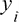是地面真值，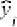是预测值。
- 交叉熵/多类交叉熵:该函数通常用于二值或多类分类模型。它衡量两个概率分布之间的差异；大的损失函数将代表大的散度。因此，这里的目标也是最小化损失函数:
图2.15:交叉熵损失函数
再次， n 指样本数。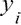和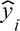分别是地面真实值和预测值。
反向传播
训练过程的最后一步包括在网络结构中从右向左计算损失函数相对于每层中的权重和偏差的偏导数(也称为梯度),以便更新这些参数(权重和偏差),从而在下一个迭代步骤中，损失函数更低。
优化算法的最终目标是找到损失函数达到最小可能值的全局最小值，如下图所示:
注意
局部最小值指的是函数域的一部分内的最小值。另一方面，全局最小值指的是函数的整个定义域的最小值。
图2.16:在二维空间中通过迭代步骤优化损失函数
这里，最左边的点A是任何优化之前损失函数的初始值。曲线底部最右边的点B是经过几个迭代步骤后的损失函数，其值已经最小化。从一个点到另一个点的过程被称为步骤。
然而，重要的是要提到损失函数并不总是像前一个那样平滑，这可能会在优化过程中引入达到局部最小值的风险。
这个过程也被称为优化，有不同的算法，不同的方法来实现相同的目标。接下来将解释最常用的优化算法。
梯度下降
梯度下降是数据科学家中使用最广泛的优化算法，它是许多其他优化算法的基础。在计算出每个神经元的梯度之后，权重和偏差在梯度的相反方向上被更新，其应该乘以学习率(用于控制在每个优化中采取的步骤的大小)，如以下等式所示。
学习率在训练过程中是至关重要的，因为它防止权重和偏差的更新过冲/下冲，过冲/下冲可能分别防止模型达到收敛或延迟训练过程。
梯度下降算法中权重和偏差的优化如下:
图2.17:梯度下降算法中参数的优化
这里， α 指的是学习率， dw/db 表示给定神经元中权重或偏差的梯度。从权重或偏差的原始值中减去这两个值的乘积，以便惩罚较高的值，这有助于计算大的损失函数。
梯度下降算法的一个改进版本称为随机梯度下降，它基本上遵循相同的过程，区别在于它以随机批次而不是一个块的方式获取输入数据，这在达到出色性能的同时缩短了训练时间。此外，这种方法允许使用更大的数据集，因为通过使用小批量的数据集作为输入，我们不再受计算资源的限制。
优点和缺点
以下是对神经网络的优点和缺点的解释。
优点
神经网络在过去几年变得越来越流行，主要有四个原因:
- 数据:神经网络因其利用大量数据的能力而广为人知，由于硬件和软件的进步，收集和存储大规模数据库现在已经成为可能。随着越来越多的数据输入神经网络，这使得神经网络显示出了它们真正的潜力。
- 复杂数据问题:正如我们之前解释过的，神经网络在解决其他机器学习算法无法解决的复杂数据问题方面表现出色。这主要是由于他们处理大型数据集和揭示复杂模式的能力。
- 计算能力:技术的进步也增加了目前可用的计算能力，这对训练使用数百万条数据的神经网络模型至关重要。
- 学术研究:由于前面的三点，互联网上出现了大量关于这个主题的学术研究，这不仅有助于每天沉浸在新的研究中，也有助于保持算法和硬件/软件需求的更新。
缺点
仅仅因为使用神经网络有很多优点，并不意味着每个数据问题都应该这样解决。这是一个常见的错误。没有一种算法可以很好地解决所有数据问题，选择使用哪种算法应该取决于可用的资源以及数据问题。
尽管神经网络被认为优于几乎任何机器学习算法，但考虑它们的缺点也是至关重要的，以便您可以权衡什么对数据问题最重要。现在让我们来看一下:
- 黑盒:这是神经网络最常见的缺点之一。它基本上意味着神经网络如何以及为什么达到某个输出是未知的。例如，当一个神经网络错误地将一幅猫的图片预测为一只狗时，就不可能知道错误的原因是什么。
- 数据需求:他们实现最佳结果所需的大量数据可能既是优势也是劣势。神经网络比传统的机器学习算法需要更多的数据，这可能是在一些数据问题上在它们和其他算法之间进行选择的主要原因。当手头的任务受到监督时，这就成了一个更大的问题，这意味着数据需要被标记。
- 训练时间:与前面的缺点联系在一起，对大量数据的需求也使得训练过程比传统的机器学习算法持续更长时间，在某些情况下，这不是一个选项。通过使用加速计算的GPU，可以减少训练时间。
- Computationally expensive: Again, the training process of neural networks is computationally expensive. While one neural network could take weeks to converge, other machine learning algorithms could take hours or minutes to be trained. The amount of computational resources needed depends on the quantity of data at hand, as well as the complexity of the network; deeper neural networks take a longer time to train.
注意
有各种各样的神经网络架构。本章将解释三种最常用的方法，以及它们在后续章节中的实际实现。然而，如果你想了解其他建筑，请访问http://www.asimovinstitute.org/neural-network-zoo/。
人工神经网络简介
人工神经网络 ( ANNs )，又称多层感知器，是多个感知器的集合。感知器之间的连接通过层发生。一层可以有任意多的感知器，并且它们都连接到前一层和后一层中的所有其他感知器。
网络可以有一层或多层。超过四层的网络被认为是深度神经网络，通常用于解决复杂和抽象的数据问题。
人工神经网络通常由三个主要元素组成，如前所述，也可以在下图中看到:
- Input layer: This is the first layer of the network, conventionally located furthest to the left in the graphical representation of a network. It receives the input data before any calculation is performed and completes the first set of calculations. This is where the most generic patterns are uncovered.
对于监督学习问题，输入数据由一对特征和目标组成。网络的工作是揭示特征和目标之间的相关性或依赖性。
- Hidden layers: Next, the hidden layers can be found. A neural network can have many hidden layers, meaning there can be any number of layers between the input layer and the output layer. The more layers it has, the more complex data problems it can tackle, but it will also take longer to train. There are also neural network architectures that do not contain hidden layers at all, which is the case with single-layer networks.
在每一层中，都会根据从上一层接收到的输入信息进行计算，然后输出一个值，该值将成为下一层的输入。
- Output layer: This is the last layer of the network as is located at the far right of the graphical representation of the network. It receives data after the data has been processed by all the neurons in the network to make a final prediction.
输出层可以有一个或多个神经元。前者指的是解决方案是二进制的模型，以0或1的形式。另一方面，后一种情况由输出属于每个可能的类标签(目标变量具有的可能值)的实例的概率的模型组成，这意味着层将具有与类标签一样多的神经元:
图2.18:具有两个隐藏层的神经网络的架构
卷积神经网络简介
卷积神经网络(CNN)主要用于计算机视觉领域，近几十年来，机器已经达到了超越人类能力的精度水平。
CNN创建模型，使用神经元的子群来识别图像的不同方面。这些组应该能够相互交流，这样，它们可以一起形成完整的图像。
考虑到这一点，CNN体系结构中的各层划分了它们的识别任务。第一层关注琐碎的模式，而网络末端的层使用这些信息来发现更复杂的模式。
例如，当识别照片中的人脸时，前几层着重于寻找将一个特征与另一个特征分开的边缘。接下来，随后的图层强调面部的某些特征，例如鼻子。最后，最后几层使用这些信息把这个人的整个脸放在一起。
这种在遇到某些特征时激活一组神经元的想法是通过使用过滤器(内核)来实现的，过滤器是CNN架构的主要构建块之一。然而，它们不是该架构中存在的唯一元素，这就是为什么这里将提供对CNN的所有组件的简要解释:
注意
填充和步幅的概念，你可能在使用CNN时听说过，将在本书的后续章节中解释。
- Convolutional layers: In these layers, a convolutional computation occurs between an image (represented as a matrix of pixels) and a filter. This computation produces a feature map as output that ultimately serves as input for the next layer.
该计算采用滤波器的相同形状的图像矩阵的一个子部分，并执行值的乘法。然后，乘积之和被设置为图像该部分的输出，如下图所示:
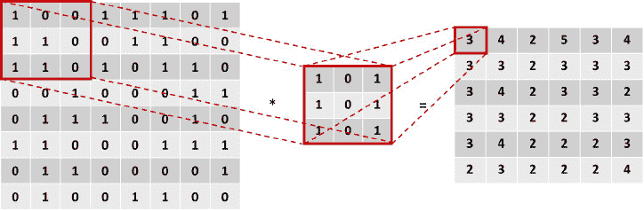图2.19:图像和滤镜之间的卷积运算
这里，左边的矩阵是输入数据，中间的矩阵是过滤器，右边的矩阵是计算的输出。用方框突出显示的值进行的计算可以在这里看到:
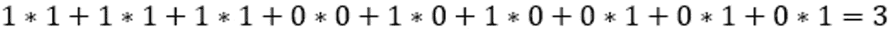图2.20:图像第一部分的卷积
对图像的所有子部分进行卷积乘法。下图显示了同一示例的另一个卷积步骤:
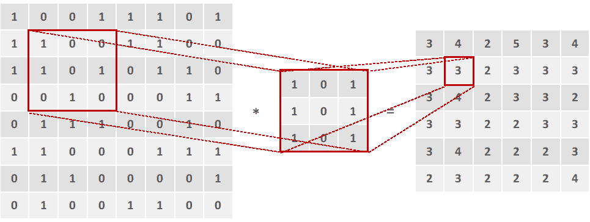图2.21:卷积运算的进一步步骤
卷积层的一个重要概念是它们是不变的，即每个滤波器都有一个特定的函数，该函数在训练过程中不会变化。例如，负责检测耳朵的过滤器将在整个训练过程中只专注于该功能。
此外，CNN通常会有几个卷积层，考虑到它们中的每一个都将专注于识别图像的特定特征或特征集，这取决于所使用的滤波器。通常，在两个卷积层之间有一个池层。
- Pooling layers: Although convolutional layers are capable of extracting relevant features from images, their results can become enormous when analyzing complex geometrical shapes, which would make the training process impossible in terms of computational power, hence the invention of pooling layers.
这些层不仅实现了减少卷积层输出的目标，还实现了移除已提取特征中存在的任何噪声，这最终有助于提高模型的准确性。
有两种主要类型的池图层可以应用，其背后的思想是检测图像中表现出更强影响的区域，以便可以忽略其他区域。
最大池化:该操作包括取给定大小的矩阵的一个子部分，并取该子部分中的最大数作为最大池化操作的输出:
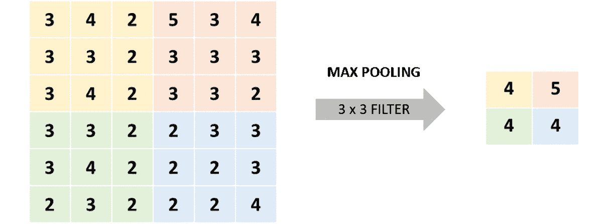图2.22:最大池操作
在上图中，通过使用3 x 3最大池过滤器，获得了右侧的结果。这里，黄色部分(左上角)的最大数量为4，而橙色部分(右上角)的最大数量为5。
平均池:类似地，平均池操作取矩阵的子部分，并取满足规则的数字作为输出，在这种情况下，它是相关子部分中所有数字的平均值:
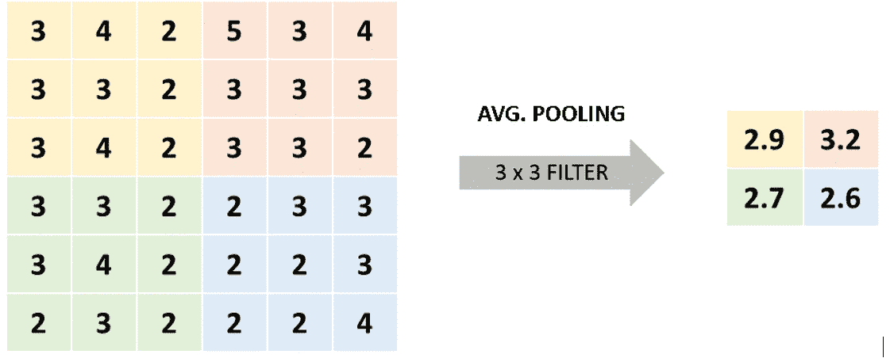图2.23:平均池操作
这里，使用一个3 x 3的过滤器，我们得到2.9，这是黄色部分(左上角)所有数字的平均值，而3.2是橙色部分(右上角)的平均值。
- Fully connected layers: Finally, considering that the network would be of no use if it was only capable of detecting a set of features without having the capability of classifying them into a class label, fully connected layers are used at the end of CNNs to take the features that were detected by the previous layer (known as the feature map) and output the probability of that group of features belonging to a class label, which is used to make the final prediction.
像人工神经网络一样，全连接层使用感知器根据给定的输入计算输出。此外，必须指出的是，CNN通常在架构末端有一个以上的全连接层。
通过结合所有这些概念，获得了CNN的传统架构。每种类型可以有任意多的层，每个卷积层可以有任意多的滤波器(每个滤波器用于特定的任务)。此外，池层应具有与前一卷积层相同数量的过滤器，如下图所示:
图2.24:CNN架构图
递归神经网络简介
前面提到的神经网络(ann和CNN)的主要限制是，它们仅通过考虑当前事件(正在处理的输入)来学习，而不考虑之前或之后的事件，考虑到我们人类不这样想，这是不方便的。例如，当阅读一本书时，你可以通过考虑前一段或更多段落的上下文来更好地理解每一句话。
由于这一点，并考虑到神经网络旨在优化传统上由人类完成的几个过程的事实，关键是要想到一个能够考虑输入和输出序列的网络，因此创建了递归神经网络 ( RNNs )。它们是一种健壮的神经网络，允许通过使用内部存储器找到复杂数据问题的解决方案。
简而言之，这些网络中包含环路，允许信息在它们的存储器中保留更长时间，即使当后续的一组信息正在被处理时。这意味着RNN中的感知器不仅将输出传递给下一个感知器，而且还为自己保留一点信息，这对分析下一点信息很有用。这种记忆保持能力使它们能够非常准确地预测接下来会发生什么。
类似于其他网络，RNN的学习过程试图映射输入(x)和输出(y)之间的关系，不同之处在于这些模型还考虑了先前输入的全部或部分历史。
RNNs允许以输入序列、输出序列或两者同时存在的形式处理数据序列，如下图所示:
图2.25:RNNs处理的数据序列
这里，每个方框是一个矩阵，箭头代表一个发生的函数。底部的方框是输入，顶部的方框是输出，中间的方框代表RNN在该点的状态，它保存了网络的内存。
从左到右，前面的图表可以解释如下:
- 不需要求解RNN的典型模型。它有一个固定输入和一个固定输出。例如，这可以指图像分类。
- 这个模型接受一个输入并产生一系列输出。举个例子，一个接收图像作为输入的模型；输出应该是一个图像标题。
- 与前面的模型相反，这个模型接受一系列的输入并产生一个单一的结果。这种类型的架构可以在情感分析问题上看到，其中输入是要分析的句子，输出是句子背后的预测情感。
- 最后两个模型接受一系列输入并返回一系列输出，区别在于第一个模型分析输入并同时生成输出；例如，当视频的每一帧被单独标记时。另一方面，第二种多对多模型分析整个输入集，以生成输出集。这方面的一个例子是语言翻译，在进行实际翻译之前，需要理解一种语言的整个句子。
数据准备
开发任何深度学习模型的第一步——当然是在收集数据之后——应该是准备数据。如果我们希望理解手头的数据以正确地勾勒出项目的范围，这是至关重要的。
许多数据科学家没有这样做，这导致模型表现不佳，甚至是无用的模型，因为它们没有从一开始就回答数据问题。
准备数据的过程可以分为三个主要任务:
- 理解数据并处理任何潜在的问题
- 重新缩放要素以确保不会因失误而引入偏差
- 拆分数据，以便能够准确测量性能
所有这三项任务将在下一节中进一步解释。
注意
我们之前解释的所有任务在应用任何机器学习算法时都非常相似，考虑到它们涉及到预先准备数据所需的技术。
处理杂乱的数据
该任务主要包括执行探索性数据分析 ( EDA )以了解可用数据，以及检测可能影响模型开发的潜在问题。
EDA过程是有用的，因为它帮助开发人员发现对行动过程的定义至关重要的信息。此信息解释如下:
- 数据量:指实例的数量和特征的数量。前者对于确定是否有必要甚至有可能使用神经网络甚至深度神经网络来解决数据问题至关重要，因为这种模型需要大量数据来实现高水平的准确性。另一方面，后者有助于确定事先开发一些特征选择方法是否是一种好的做法，以便减少特征的数量，简化模型，并消除任何冗余信息。
- 目标特征:对于监督模型，需要对数据进行标记。考虑到这一点，选择目标要素(我们希望通过构建模型实现的目标)以评估该要素是否有许多缺失值或异常值是非常重要的。此外，这有助于确定开发的目标，该目标应该与可用的数据一致。
- Noisy data/outliers: Noisy data refers to values that are visibly incorrect, for instance, a person who is 200 years old. On the other hand, outliers refer to values that, although they may be correct, are very far from the mean, for instance, a 10-year-old college student.
没有检测异常值的精确科学，但是有一些被普遍接受的方法。假设一个正态分布的数据集，最流行的方法之一是将任何偏离平均值约3-6个标准偏差的值确定为异常值。
识别异常值的一个同样有效的方法是选择第99和第1百分位的值。
当这些值占某个特征数据的5%以上时，处理这些值非常重要，因为不这样做可能会给模型带来偏差。与任何其他机器学习算法一样，处理这些值的方法是删除异常值或使用均值或回归插补技术分配新值。
- 缺失值:与前面提到的类似，考虑到不同的模型会对这些值做出不同的假设，具有许多缺失值的数据集会给模型带来偏差。同样，当缺失值占某个特性值的5%以上时，应通过消除或替换它们来处理，同样使用平均值或回归插补技术。
- Qualitative features: Finally, checking whether the dataset contains qualitative data is also a key step, considering that removing or encoding data may result in more accurate models.
此外，在许多研究开发中，对相同的数据测试几种算法，以确定哪种算法执行得更好，并且这些算法中的一些不允许使用定性数据，如神经网络的情况。这证明了对它们进行转换或编码的重要性，以便能够向所有算法提供相同的数据。
练习2.02:处理杂乱的数据
注意
本章中的所有练习将使用来自UC Irvine机器学习知识库的Appliances energy prediction Dataset来完成，该知识库从https://archive . ics . UCI . edu/ml/datasets/Appliances+energy+prediction下载。也可以在本书的GitHub资源库中找到:https://packt.live/34MBoSw
Appliances energy prediction Dataset包含与低能耗建筑中不同房间的温度和湿度测量相关的4.5个月的数据，目的是预测某些设备使用的能源。
在本练习中，我们将使用pandas，这是一个流行的Python包，来探索手头的数据，并学习如何检测缺失值、异常值和定性值。执行以下步骤来完成本练习:
注意
对于本章中的练习和活动，您需要在本地机器上安装Python 3.7、Jupyter 6.0、NumPy 1.17和Pandas 0.25。
- 打开一个Jupyter笔记本来实现这个练习。
- 导入熊猫库:
import pandas as pd
- Use pandas to read the CSV file containing the dataset we downloaded from the UC Irvine Machine Learning Repository site.
接下来，删除名为
date的列，因为我们不想在下面的练习中考虑它:data = pd.read_csv("energydata_complete.csv") data = data.drop(columns=["date"])最后，打印数据帧的头:
data.head()
输出应该如下所示:
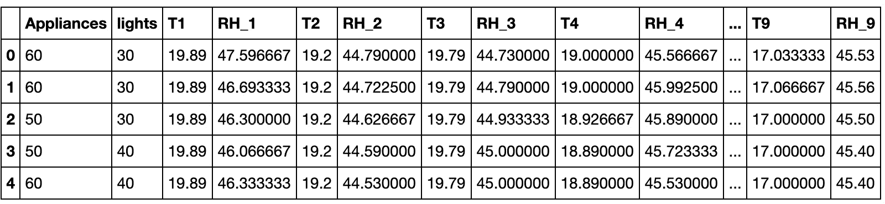图2.26:设备能源预测数据集的顶级实例
- Check for categorical features in your dataset:
cols = data.columns num_cols = data._get_numeric_data().columns list(set(cols) - set(num_cols))
第一行生成数据集中所有列的列表。接下来，包含数值的列也存储在一个变量中。最后，通过从整个列列表中减去数字列，可以获得非数字列。
结果列表为空，这表明没有要处理的分类要素。
- Use Python's
isnull()andsum()functions to find out whether there are any missing values in each column of the dataset:data.isnull().sum()
该命令计算每列中null值的数量。对于正在使用的数据集，不应有任何缺失值，如下所示:
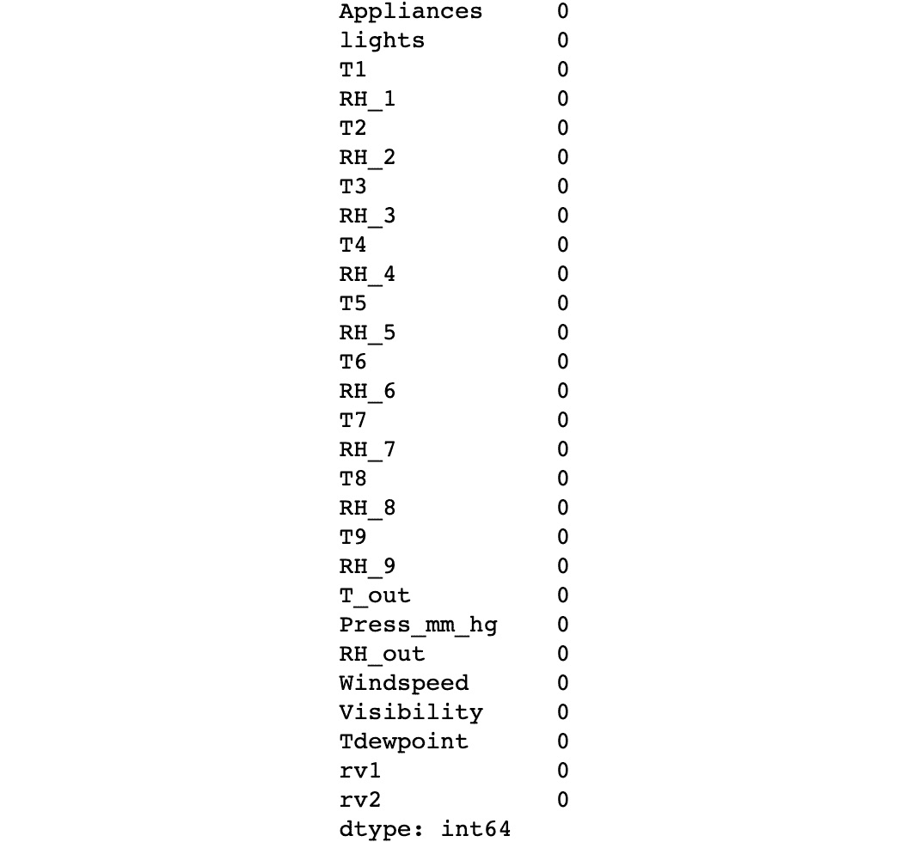图2.27:缺失值计数
- Use three standard deviations as the measure to detect any outliers for all the features in the dataset:
outliers = {} for i in range(data.shape[1]): min_t = data[data.columns[i]].mean() \ - (3 * data[data.columns[i]].std()) max_t = data[data.columns[i]].mean() \ + (3 * data[data.columns[i]].std()) count = 0 for j in data[data.columns[i]]: if j < min_t or j > max_t: count += 1 percentage = count / data.shape[0] outliers[data.columns[i]] = "%.3f" % percentage outliers前面的代码片段对数据集中的列执行一个
for循环，以评估每个列中是否存在离群值。它继续计算最小和最大阈值，以便能够计算超出阈值范围的实例数。最后，它计算异常值的百分比(即异常值的数量除以实例的总数)，以便输出一个字典，显示每一列的百分比。
通过打印结果字典(
outliers)，可以显示数据集中所有特征(列)的列表，以及异常值的百分比。根据结果，考虑到异常值占数据的比例不到5%，可以得出无需处理异常值的结论，如下图所示:注意
请注意，Jupyter笔记本可以在不需要打印功能的情况下打印变量的值，只要变量位于笔记本中的单元格的末尾。在任何其他编程平台或任何其他场景中，确保使用打印功能。
例如，打印包含异常值的结果字典的一种等价方式(也是最佳实践)是使用print语句，如下所示:
print(outliers)。这样，代码在不同的编程平台上运行时会有相同的输出。
图2.28:每个特征中的异常参与
注意
要访问该特定部分的源代码，请参考https://packt.live/2CYEglp的。
你也可以在https://packt.live/3ePAg4G的在线运行这个例子。您必须执行整个笔记本才能获得想要的结果。
您已经成功地浏览了数据集并处理了潜在的问题。
数据重新缩放
虽然数据不需要重新缩放就可以输入算法进行训练，但如果您希望提高模型的准确性，这是重要的一步。这基本上是因为每个特征具有不同的比例可能导致模型假设给定的特征比其他特征更重要，因为它具有更高的数值。
以两个特征为例，一个测量一个人有几个孩子，另一个表明这个人的年龄。尽管年龄特征可能具有较高的数值，但在推荐学校的研究中，儿童数量特征可能更重要。
考虑到这一点，如果所有要素的比例相等，模型实际上可以为那些对目标要素最重要的要素赋予更高的权重，而不是它们所具有的数值。此外，它还可以通过消除模型从数据的不变性中学习的需要来帮助加速训练过程。
有两种主要的重标度方法在数据科学家中很受欢迎，尽管没有选择这一种或那一种的规则，但重要的是要强调它们要单独使用(这一种或那一种)。
这两种方法的简要说明可以在下面找到:
- 标准化:这包括重新调整值，使所有特性的所有值都在0和1之间。这可以通过以下等式来实现:
图2.29:数据规范化
- 标准化:相比之下，这种重新调整方法转换所有的值，使它们的平均值为0，标准偏差等于1。这可以通过以下等式来实现:
图2.30:数据标准化
练习2.03:重新调整数据
在本练习中，我们将重新调整上一个练习中的数据。为此，请执行以下步骤:
注意
使用您在上一个练习中使用的Jupyter笔记本。
- Separate the features from the target. We are only doing this to rescale the features data:
X = data.iloc[:, 1:] Y = data.iloc[:, 0]
前面的代码片段获取数据，并使用切片将特征与目标分开。
- Rescale the features data by using the normalization methodology. Display the head (that is, the top five instances) of the resulting DataFrame to verify the result:
X = (X - X.min()) / (X.max() - X.min()) X.head()
输出应该如下所示:
图2.31:标准化电器能源预测数据集的顶级实例
注意
要访问该特定部分的源代码，请参考https://packt.live/2ZojumJ。
您也可以在https://packt.live/2NLVgxq在线运行此示例。您必须执行整个笔记本才能获得想要的结果。
您已经成功地重新调整了数据集。
拆分数据
将数据集分成三个子集的目的是为了在不引入偏差的情况下，对模型进行适当的训练、微调和测量。以下是对每组的解释:
- 训练集:顾名思义，这个集合被馈入要训练的神经网络。对于监督学习，它由特征和目标值组成。正如我们前面提到的，考虑到神经网络需要大量的数据来训练，这通常是三个集合中最大的一个。
- Validation set (dev set): This set is used mainly to measure the performance of the model in order to make adjustments to the hyperparameters to improve performance. This fine-tuning process is done so that we can configure the hyperparameters that achieve the best results.
虽然该模型不是根据这些数据训练的，但它对这些数据有间接影响，这就是为什么最终的性能测量不应在这些数据上进行，因为它可能是有偏差的测量。
- 测试集:该测试集对模型没有影响，这就是为什么它用于对未知数据执行模型的最终评估，这成为模型在未来数据集上表现如何的指导方针。
考虑到每个数据问题都是不同的，并且开发深度学习解决方案通常需要一种试错方法，因此没有关于将数据分成上述三组的完美比例的实际科学。然而，众所周知，考虑到对训练集使用尽可能多的数据是至关重要的，较大的数据集(数十万和数百万个实例)对于每个数据集应该具有98:1:1的拆分比率。对于较小的数据集，传统的拆分比例是60:20:20。
练习2.04:分割数据集
在本练习中，我们将把上一个练习中的数据集分成三个子集。出于学习的目的，我们将探索两种不同的方法。首先，将使用索引拆分数据集。接下来，scikit-learn的train_test_split()函数将用于相同的目的，从而用两种方法实现相同的结果。执行以下步骤来完成本练习:
注意
使用您在上一个练习中使用的Jupyter笔记本。
- Print the shape of the dataset in order to determine the split ratio to be used:
X.shape
这个操作的输出应该是
(19735, 27)。这意味着可以对训练集、验证集和测试集使用60:20:20的拆分比率。 - Get the value that you will use as the upper bound of the training and validation sets. This will be used to split the dataset using indexing:
train_end = int(len(X) * 0.6) dev_end = int(len(X) * 0.8)
前面的代码确定将用于通过切片划分数据集的实例的索引。
- Shuffle the dataset:
X_shuffle = X.sample(frac=1, random_state=0) Y_shuffle = Y.sample(frac=1, random_state=0)
使用熊猫
sample功能，可以打乱特征和目标矩阵中的元素。通过将frac设置为1，我们确保所有的实例都被混洗并在函数的输出中返回。使用random_state参数，我们确保两个数据集被同等地混洗。 - 使用索引将混洗的数据集分为三组，分别用于特征和目标数据:
x_train = X_shuffle.iloc[:train_end,:] y_train = Y_shuffle.iloc[:train_end] x_dev = X_shuffle.iloc[train_end:dev_end,:] y_dev = Y_shuffle.iloc[train_end:dev_end] x_test = X_shuffle.iloc[dev_end:,:] y_test = Y_shuffle.iloc[dev_end:]
- Print the shapes of all three sets:
print(x_train.shape, y_train.shape) print(x_dev.shape, y_dev.shape) print(x_test.shape, y_test.shape)
上述操作的结果应该如下所示:
(11841, 27) (11841,) (3947, 27) (3947,) (3947, 27) (3947,)
- Import the
train_test_split()function from scikit-learn'smodel_selectionmodule:from sklearn.model_selection import train_test_split
注意
尽管不同的包和库被导入是因为它们是实际学习所需要的，但是在代码的开始导入它们总是一个好的做法。
- Split the shuffled dataset:
x_new, x_test_2, \ y_new, y_test_2 = train_test_split(X_shuffle, Y_shuffle, \ test_size=0.2, \ random_state=0) dev_per = x_test_2.shape[0]/x_new.shape[0] x_train_2, x_dev_2, \ y_train_2, y_dev_2 = train_test_split(x_new, y_new, \ test_size=dev_per, \ random_state=0)第一行代码执行初始分割。该函数将以下内容作为参数:
X_shuffle、Y_shuffle:要分割的数据集，即要素数据集，以及目标数据集(也称为X和Y)test_size:测试集中包含的实例的百分比random_state:用于确保结果的再现性这行代码的结果是将每个数据集(X和Y)分成两个子集。
为了创建一个额外的集合(验证集合)，我们将执行第二次分割。前面代码的第二行负责确定用于第二次分割的
test_size,以便测试集和验证集具有相同的形状。最后，最后一行代码使用之前作为
test_size计算的值执行第二次拆分。 - Print the shape of all three sets:
print(x_train_2.shape, y_train_2.shape) print(x_dev_2.shape, y_dev_2.shape) print(x_test_2.shape, y_test_2.shape)
前面操作的结果应该如下所示:
(11841, 27) (11841,) (3947, 27) (3947,) (3947, 27) (3947,)
正如我们所看到的，两种方法得到的集合具有相同的形状。使用哪种方法是个人喜好的问题。
注意
要访问该特定部分的源代码，请参考https://packt.live/2VxvroW。
你也可以在https://packt.live/3gcm5H8在线运行这个例子。您必须执行整个笔记本才能获得想要的结果。
您已经成功地将数据集分成了三个子集。
没有准备好资料的坏处
尽管准备数据集的过程非常耗时，并且在处理大型数据集时可能会很累，但不这样做的缺点是更不方便:
- 更长的训练时间:包含噪声、缺失值和冗余或不相关列的数据需要更长的训练时间，在大多数情况下，这种时间延迟甚至比准备数据所需的时间还要长。例如，在数据准备期间，可以确定五列与研究目的无关，这可以显著减少数据集，并因此显著减少训练时间。
- 引入偏差:未清理的数据通常包含错误或缺失值，会使模型偏离事实。例如，缺少值会导致模型做出不真实的推断，这反过来会创建一个不代表数据的模型。
- 避免泛化:离群值和噪声值会阻止模型对数据进行泛化，这对于构建代表当前训练数据以及未来未知数据的模型至关重要。例如，包含年龄变量的数据集(其中包含超过100岁的人的条目)可能会产生一个模型，该模型考虑了实际上代表人口中很小一部分的那些用户。
活动2.01:执行数据准备
在本活动中，我们将准备一个包含歌曲列表的数据集，每首歌曲都有几个有助于确定其发行年份的属性。这个数据准备步骤对于本章的下一个活动至关重要。让我们看看下面的场景。
你在一家音乐唱片公司工作，你的老板希望发现不同时期唱片的特征细节，这就是为什么他们建立了一个包含515，345张唱片数据的数据集，发行年份从1922年到2011年不等。他们让你准备数据集，这样就可以输入神经网络了。执行以下步骤来完成本练习:
注意
要下载本活动的数据集，请访问下面的加州大学欧文分校机器学习资源库URL:https://archive.ics.uci.edu/ml/datasets/YearPredictionMSD。
引用:Dua，d .和Graff，C. (2019)。http://archive.ics.uci.edu/ml的UCI机器学习库。加州欧文:加州大学信息与计算机科学学院。
这本书的GitHub资源库也有:https://packt.live/38kZzZR
- 导入所需的库。
- 使用pandas，加载
.csv文件。 - 验证数据集中是否存在任何定性数据。
- Check for missing values.
您还可以添加一个额外的
sum()函数来获得整个数据集中缺失值的总和，而不用按列进行区分。 - 检查异常值。
- 从目标数据中分离要素。
- 使用标准化方法重新调整数据。
- Split the data into three sets: training, validation, and test. Use whichever approach you prefer.
注意
这项活动的解决方案可在第239页找到。
构建深度神经网络
一般来说，构建神经网络可以在非常简单的层面上使用scikit-learn(不适合深度学习)等库来实现，这些库为您执行所有的数学运算，没有太大的灵活性；也可以在非常复杂的层面上通过从头开始对训练过程的每一步进行编码来实现，或者通过使用更健壮的框架来实现，这种框架允许很大的灵活性。
PyTorch是考虑到该领域许多开发人员的意见而构建的，它的优点是允许在同一个地方进行两种近似。正如我们之前提到的，它有一个神经网络模块，构建该模块是为了允许使用顺序容器轻松预定义简单架构的实现，同时允许创建自定义模块，从而为构建非常复杂的架构的过程带来灵活性。
在本节中，我们将讨论使用顺序容器来开发深度神经网络，以消除其复杂性。然而，在本书的后面部分，我们将继续探索更复杂和抽象的应用程序，这些应用程序也可以不费吹灰之力实现。
正如我们前面提到的，顺序容器是一个模块，它被构建来包含遵循一个顺序的模块序列。它包含的每个模块都将对给定的输入进行一些计算，以得出结果。
下面解释了一些最常用的模块(层),它们可以在顺序容器中用来开发常规分类模型:
注意
用于其他类型架构的模块，如CNN和RNNs，将在后续章节中解释。
True默认)作为论据。Falseby default.Tanh :这将对包含输入数据的张量应用基于元素的Tanh函数。这不需要任何争论。
Sigmoid :将之前解释的Sigmoid函数应用于包含输入数据的张量。这不需要任何争论。
Softmax :将Softmax函数应用于包含输入数据的n维张量。输出被重新缩放，使得张量的元素位于0和1之间的范围内，并且总和为1。它将计算softmax函数的维度作为参数。
False默认情况下，作为自变量。这种技术通常用于处理过度拟合的模型，稍后将对此进行更详细的解释。BatchNorm1d、BatchNorm2d和BatchNorm3d。这背后的想法是归一化来自前一层的输出，最终在较低的训练时间达到类似的精度水平。
练习2.05:使用PyTorch构建深度神经网络
在本练习中，我们将使用PyTorch库来定义四层深度神经网络的架构，然后使用我们在之前的练习中准备的数据集对其进行训练。为此，请执行以下步骤:
注意
使用您在上一个练习中使用的Jupyter笔记本。
- Import the PyTorch library, called
torch, as well as thennmodule from PyTorch:import torch import torch.nn as nn
注意
为了确保在本书的GitHub资源库中获得的结果的可再现性，本练习中使用了
torch.manual_seed(0)。 - 对于我们在前一个练习中创建的每个集合，将特征列与目标分开。另外，将最终数据帧转换成张量:
x_train = torch.tensor(x_train.values).float() y_train = torch.tensor(y_train.values).float() x_dev = torch.tensor(x_dev.values).float() y_dev = torch.tensor(y_dev.values).float() x_test = torch.tensor(x_test.values).float() y_test = torch.tensor(y_test.values).float()
- Define the network architecture using the
sequential()container. Make sure to create a four-layer network. Use ReLU activation functions for the first three layers and leave the last layer without an activation function, considering the fact that we are dealing with a regression problem.每层的单位数应为100、50、25和1:
model = nn.Sequential(nn.Linear(x_train.shape[1], 100), \ nn.ReLU(), \ nn.Linear(100, 50), \ nn.ReLU(), \ nn.Linear(50, 25), \ nn.ReLU(), \ nn.Linear(25, 1)) - 将损失函数定义为MSE:
loss_function = torch.nn.MSELoss()
- 将优化器算法定义为Adam优化器:
optimizer = torch.optim.Adam(model.parameters(), lr=0.001)
- 使用
for循环在1000个迭代步骤的训练数据上训练网络:for i in range(1000): y_pred = model(x_train).squeeze() loss = loss_function(y_pred, y_train) optimizer.zero_grad() loss.backward() optimizer.step() if i%100 == 0: print(i, loss.item())